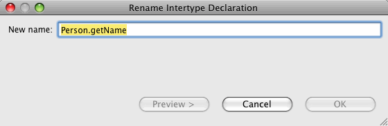
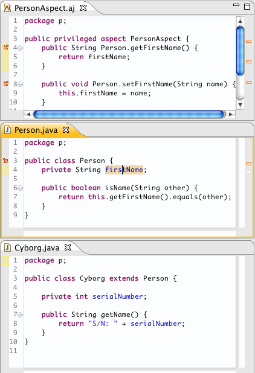
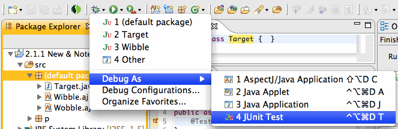

| Overview |
In this release, we have gone further with our support for Intertype Declarations (ITDs).
Due to frameworks like Spring Roo, AspectJ and AJDT
having been growing in popularity. Spring Roo uses ITDs heavily and as such, there has been a strong push
to provide even better support for them in the IDE.
|
|
| ITD-Aware search |
AJDT now supports ITD-aware searching. There are two parts to this feature:
- Standard Java search will find references to Java elements inside an ITD. For example, in this snippet of code,
a search for the references to the
name field yields two references inside of ITDs:
- Now, invoking Java search on an ITD will locate all of its valid references as shown in this example:>
For more information, see Bug 273335.
|
|
| ITD rename refactoring |
Building on top of our new support for ITD-aware searches, we now support rename refactoring of ITD fields and methods. You can invoke rename
refactoring for ITDs in the same way that you invoke rename refactoring for Java elements using keyboard commands (e.g.- CTRL-Shift-R on Windows)
or from the context menu. As much as reasonable, we follow the same conventions of JDT's rename refactoring. For example, rename an ITD and all
overriding methods will be renamed as well as the following example shows:
- In the following code, notice that the
Person.getName() is overridden in the Cyborg
class. This is the method that we want to rename:

- Select the method, right-click, Refactor, Rename...:
- The rename dialog pops up:

- After choosing the new name, select Preview:
Notice how Cyborg.getName() is renamed along with the Person.getName() intertype declaration.
- Finally, click OK to finish the refactoring and get the following result, with all references to
Person.getName() renamed:
The rename refactoring is hooked into Eclipse's undo facility, so that all renames, even those that span multiple files, are undoable.
For more information, see Bug 303558.
|
|
| ITD-aware renaming of getters and setters |
AJDT has added a refactoring participant to allow ITD getters and setters to be renamed when their associated field is renamed.
In order to access this functionality, the Rename Getter and/or Rename Setter check boxes must be checked
in the rename field dialog:
With these check boxes selected, renaming the name field to firstName in the previous example will
produce the following results:

|
|
| Pull-out refactoring |
We have implemented the Pull-Out refactoring, which is the analog to the
Push-In refactoring.
This refactoring will pull out a Java field, method, or constructor into a target Aspect as an intertype declaration.
This refactoring can be invoked from the package explorer, Java editor, outline view, or anywhere that Java elements appear. For example:
- Select the elements that you would like to pull out and invoke the refactoring wizard:
- Choose the target aspect and the appropriate options:
- Click Preview to see the proposed results (if desired):
The pull out refactoring is hooked into Eclipse's undo and redo mechanism and so it
can be undone with a single command. For more information, see Bug 277055.
|
|
| Aspect-aware type renaming |
Type references inside of Aspects are now renamed when the associated type declaration is renamed.
Here, the Wibble aspect contains several references to Target inside of
its aspect elements:
When Target is renamed, all references in referring aspects are renamed as well:

In some circumstances, you will see a refactoring warning:
This warning occurs due to some limitations we have with searching for references inside of aspects and
it can safely be ignored.
|
|
@Test and Intertype declarations |
It is now possible to run intertype declarations that are JUnit 4 tests through the
Eclipse JUnit test launcher:
Notice here that the Target class is empty, and it has 2 tests declared on it as ITDs.
To run these kinds of tests, simply choose the container (type, compilation unit, package, etc) that the
tests are contained in and launch:

|
|
| AspectJ-aware PDE Build (Helios only) |
For the Helios (Eclipse 3.6) stream, AJDT now provides PDE build integration on top of
Bug 303960. This means that the old AJDT-PDE
feature and wizards are superfluous and no longer exist in the 3.6 stream.
Now, plug-ins that require AspectJ can use the same PDE export wizards and headless PDE support as any other Java
plug-in. All that is required is adding two lines to your build.properties file
on all of your plug-ins that require AspectJ:
compilerAdapter=org.eclipse.ajdt.core.ant.AJDT_AjcCompilerAdapter
sourceFileExtensions=*.java, *.aj
For more information, see:
AJDT-PDE builds redux.
|
|
| Modernize the build server |
We have moved the AJDT continuous integration builds to a modern Atlassian Bamboo server. From an end user's
perspective this does not mean much, except that you can browse the build processes as they occur. However,
from a developer's point of view, the build process is faster, more robust, and easier to maintain over time.
From an end-user's perspective, it is now possible to closely monitor the development releases of AJDT.
If you are interested, you can see the build server at: http://build.springframework.org/browse/AJDT.
For more information, see Bug 298913.
|
|
| AspectJ 1.6.9 |
AJDT 2.1.0 includes AspectJ 1.6.9. This release has several new features including
transparent weaving, intertype inner types, overweaving, and a reduction of class
file size. See the readme for all details.
|
|
| Bug Fixes |
See Bugzilla for a list of bugs addressed in this release.
|
|
| Thanks! |
We now have a new member on the AJDT team, Kris De Volder. Kris is joining us from the University of British
Columbia, where his focus was AOP and code browsing using AOP techniques to help understand large code-bases. Kris
is the implementor of the pull out refactoring. Welcome aboard!
|
|
| Previous Releases |
See here
for information on the new features in AJDT 2.0.2.
|